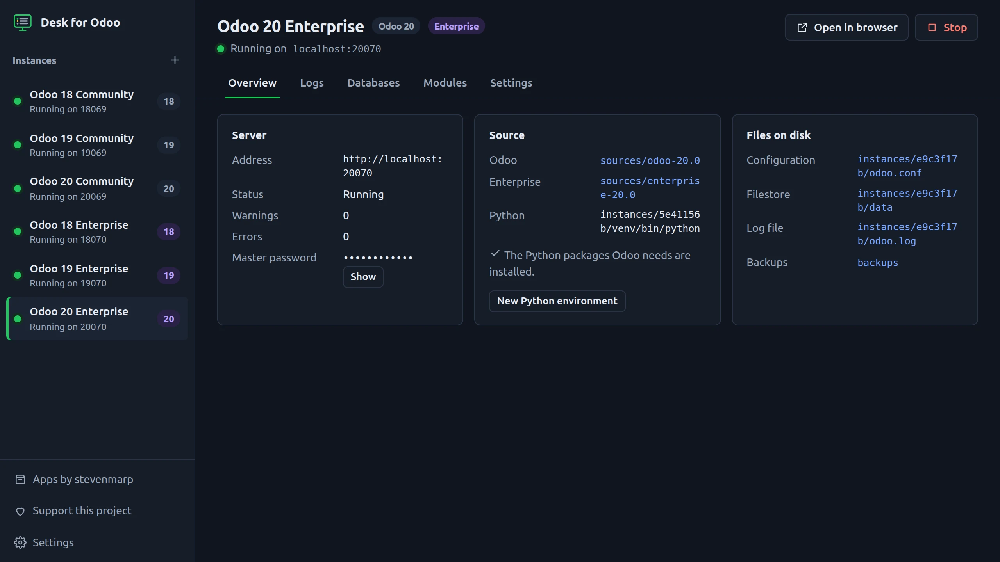
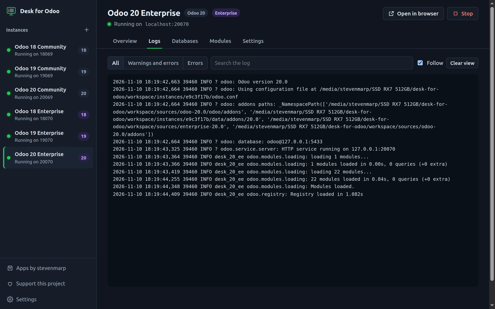
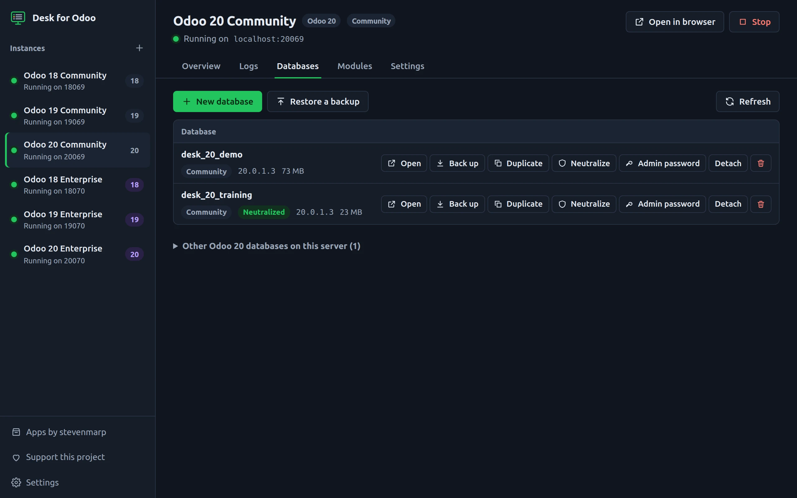
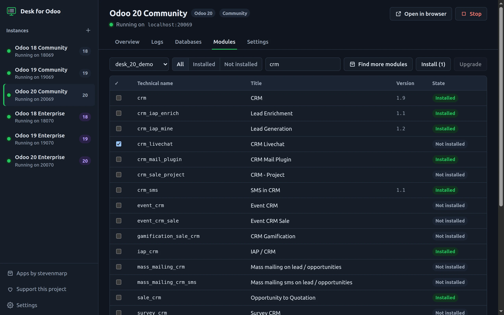
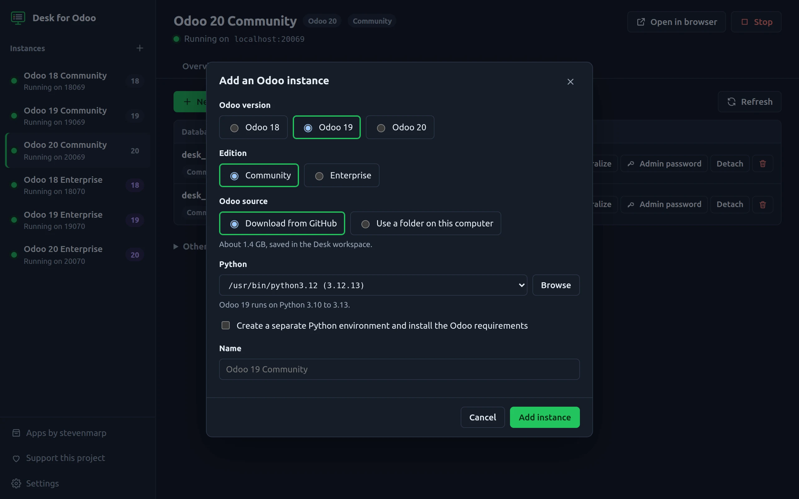

Odoo 18, 19 and 20 on your own computer, in one window.
Community or Enterprise, side by side. Start the servers, read the logs, back up and copy databases and install modules without opening a terminal.
Free and open source under the MIT license. No account, no telemetry.
- Odoo 18 Community18069
- Odoo 19 Community19069
- Odoo 20 Community20069
- Odoo 18 Enterprise18070
- Odoo 19 Enterprise19070
- Odoo 20 Enterprise20070

The work you do by hand, one click each
Running Odoo locally means the right Python per version, PostgreSQL, a 1.4 GB clone, a config file per version, one terminal per server and pg_dump plus a filestore copy for every backup.
| You want to | By hand | With Desk for Odoo |
|---|---|---|
| Run Odoo 19 for the first time | Install Python and PostgreSQL, clone, pip, write odoo.conf, run odoo-bin | Add instance, then Start |
| Run 18, 19 and 20 at the same time | Separate environments, ports and configs, three terminals | One click each, a free port picked for you |
| Find why the server fails | Scroll a terminal | Live log with warnings and errors counted on the tab, filters and search |
| Back up a database | pg_dump and a copy of the filestore | Back up: one zip that Odoo's own database manager restores |
| Try something on a copy of production | Restore, then switch off mail servers, crons and payments | Restore or Duplicate with Neutralize ticked |
| Install or upgrade modules | Stop the server, -i or -u, start again | Tick the modules, Install or Upgrade |
| Recover the admin password | odoo-bin shell and a script | Admin password |
See the server, not a terminal
Every instance has its own live log. Warnings and errors are counted on the tab and highlighted in the text, so a failing module shows up before you open the browser. Filter by level, search, and open the log file on disk when you need the full history.

Databases you can copy without fear
Create a database with or without demo data, back it up to a zip, restore it, duplicate it and neutralize the copy so it never sends a mail or charges a card. A badge tells you which copies are neutralized. Delete asks you to type the name.
Every action runs Odoo's own commands (odoo-bin db, neutralize, shell), so the filestore always comes along.

Modules from your own folders
Add your addons folders per instance; they come before Odoo's. Desk lists every module with its state in the database you pick. Tick several, across searches, and install or upgrade them in one go: the server stops and starts again around it.

Community or Enterprise, the right Python
Download Odoo Community from GitHub or point to a folder you already have. Enterprise comes from your own copy, or from github.com/odoo/enterprise if your account has access: the token is used for that download and never saved.
Desk lists the Pythons on your computer that fit the version and can make a separate environment with the Odoo requirements, taking ready-made wheels for the packages that often fail to build.

Safe next to the databases you already have
- Only its own databases. An instance runs on the databases it created, restored, duplicated or that you attached. Other databases on the same PostgreSQL are never loaded.
- Scheduled actions off. Crons stay quiet unless you switch them on for an instance, so no mail queue, sync or check-out job runs by surprise.
- Only on this computer. Every server listens on
127.0.0.1, so a demo database withadmin/adminis not reachable from your network. - Nothing hidden. Sources, environments, configurations, filestores, logs and backups live in one workspace folder you can open from the app.
Download
Version 0.1.0. The builds are not signed yet: Windows shows Windows protected your PC (More info, then Run anyway) and macOS asks you to open it from System Settings, Privacy & Security the first time.
chmod +x), then run it
You also need, once
- PostgreSQL with a user that can create databases: 12 or later for Odoo 18, 13 for Odoo 19, 16 for Odoo 20.
- Python in the range of the Odoo version: 3.10 to 3.12 for 18, 3.10 to 3.13 for 19, 3.12 to 3.14 for 20.
- git, to download the Odoo source.
Or run it from source
git clone https://github.com/stevenmarp/desk-for-odoo.git
cd desk-for-odoo
npm install
npm startMade by an Odoo developer
Desk for Odoo is built and maintained by Stevenmarp, who also publishes modules for Odoo 18, 19 and 20 on the Odoo Apps store. Desk stays free and open source; this is how you keep it going.